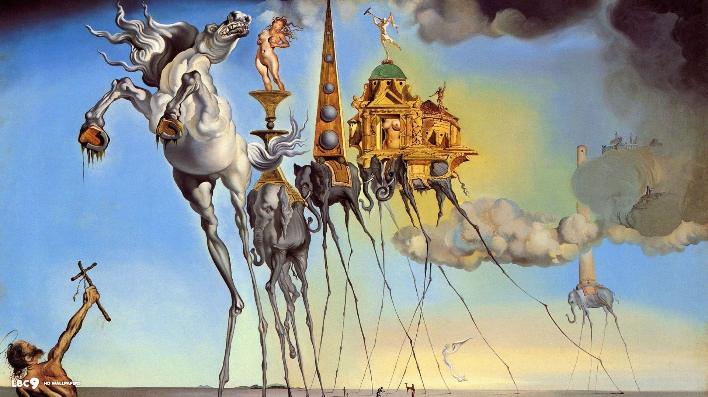
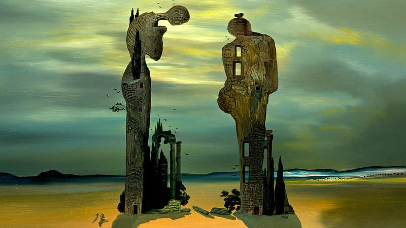
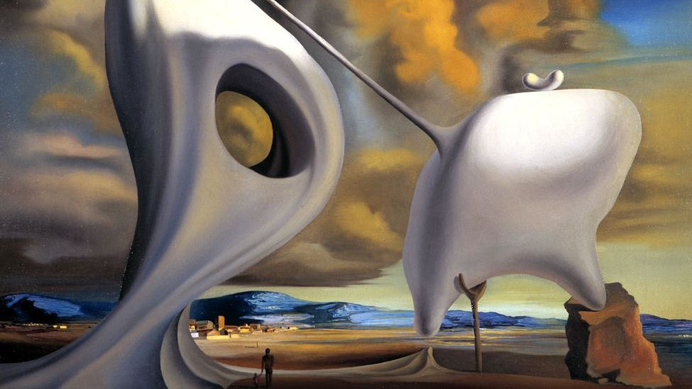
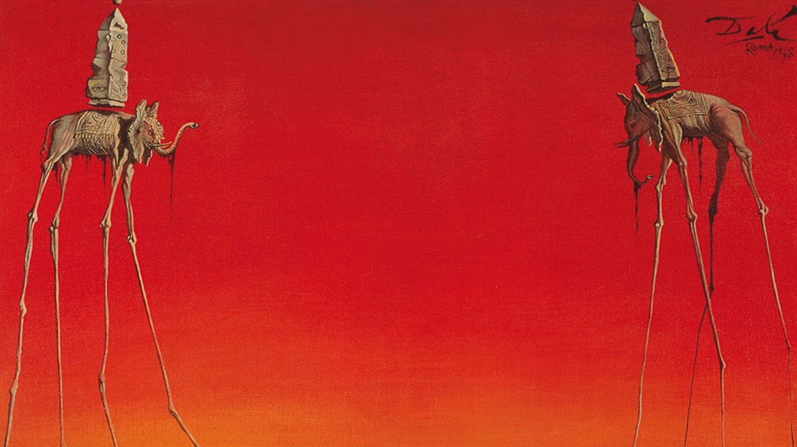
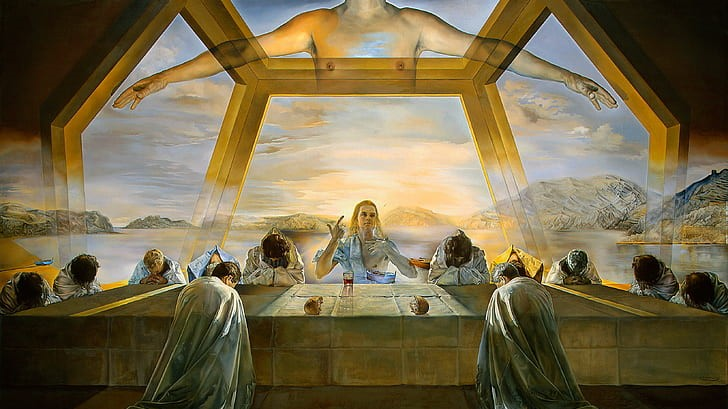

conocido también como Los relojes blandos o Los relojes derretidos
es un cuadro del pintor español Salvador Dalí pintado en 1931.

La tentación de San Antonio
es un cuadro realizado por el pintor español Salvador Dalí en 1946.
La obra está pintada al óleo sobre lienzo, es surrealista y mide 90
x 119,5 cm.

Archeological Reminiscence Millet's Angelus
es una de estas reinterpretaciones. Según el método
paranoico-crítico de Dalí, a través del delirio o la paranoia es
posible llegar al conocimiento de lo irracional y que éste llegue al
mundo de la realidad.

Ángelus arquitectónico de Millet
Hacia finales de la década de los veinte, tomando como punto de
partida las teorías del psicoanalista francés Jacques Lacan,
Salvador Dalí llega al descubrimiento del método paranoico-crítico

Los Elefantes
La figura del elefante es una temática que se repite en la obras de
Salvador Dalí. En 1944, en el cuadro “Sueño causado por el vuelo de
una abeja alrededor de una granada un segundo antes de despertar”

La Última Cena
es un famoso cuadro realizado por Salvador Dalí en 1955. Está
pintado al óleo sobre lienzo, mide 167 x 268 cm y se encuentra en la
Galería Nacional de Arte de Washington D. C.
Ubicación
About
Dalí Paris, anteriormente conocido como Espace Dalí, es un museo de
París, Francia, situado cerca de la famosa Place du Tertre, en
Montmartre. El museo expone obras únicas de Salvador Dalí, en
particular esculturas y grabados.
Redes
Dirección: 11 Rue Poulbot, 75018 Paris, Francia
Teléfono: +33 1 42 64 40 10
Metro: Anvers (línea 2); Abbesses o Lamarck-Caulaincourt (línea 12)